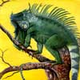

|
December 2000
To mark an important anniversary and protest the imprisonment of two conservationists, members of the Mexican nonprofit group, Naturalia, climbed to the snowy summit of Ixtaccihuatl Volcano last October. During the three-day ascent, they documented the serious impact human activities have caused on Ixtaccihuatl, as deforestation threatens the mountain's ancient oak and conifer forests and global warming melts the mountain's glaciers.
At 17,338 feet (5,286 meters), Ixtaccihuatl, Aztec for "white woman" and pronounced "Ista-see-wattle," is the third highest peak in Mexico and the seventh tallest in North America. It stands about 50 miles southeast of Mexico City and has been dormant for about 80,000 years, unlike nearby Popocatépetl (Popo-cata-petal), which recently spurted smoke and ash and is closed to climbers.
Rubén Treviño, environmental education coordinator for Naturalia, says that the triumphant climb coincided with the 10th anniversary of the conservation group. "For a conservation group to reach 10 years in Mexico is significant," he points out. "There are many environmental groups here...but few groups dedicated to protecting the country's flora and fauna, like Naturalia."
Another motive of the expedition, he explains, was to publicly object to the imprisonment of Rodolfo Montiel and Teodoro Cabrera, two farmers and ecologists sentenced to six years in jail on charges that Treviño and other conservationists claim were trumped up. Two years ago Montiel founded a grassroots movement called the Organization of Campesino Ecologists of the Sierra de Petatlán and Coyuca de Catalán. Comprised of subsistence farmers and environmentalists, the group actively protested against deforestation in the forests of Sierra of Petatlán in the state of Guerrero. They reported that local rivers were drying up and fish were dying as a result of environmental neglect and the government's refusal to stop the logging that caused soils to clog once pristine waterways. They also denounced the government's granting of logging concessions in Guerrero's ancient white pine and fir forests. In 1999 Montiel and Cabrera were detained and imprisoned by the Mexican Army, which accused the two activists of being members of a guerilla movement and trafficking in drugs.
Conservationists in Mexico are hopeful that the new government of President Vicente Fox will review the case, says Treviño, who visited the two farmers in prison, but he admits that "the outlook for Rodolfo and Teodoro is not encouraging, even though the National Commission of Human Rights investigated and denounced the fact that they had been tortured by the military and that there were serious irregularities during their trial." In spite of this and pressure from the national and international conservation communities - Montiel was awarded the 2000 Goldman Environmental Prize - their sentence was ratified, which Treviño says "underscores the impunity and power the military has in this country."
During their ascent of Ixtaccihuatl, the Naturalia conservationists were disheartened to find increased deforestation on the volcano's lower slopes. According to Jorge Neyra, an ecologist who was the group's guide, Ixtaccihuatl is one of the few volcanoes in the world that is covered with glacial ice, even though it's actually in the Earth's tropical zone, between the Tropic of Cancer and Tropic of Capricorn. Above 12,000 feet (3,650 meters), the volcano is protected as a national park, but the most biologically rich zones are below that, he says. Although the lower part of the volcano is called a "municipal reserve," he notes that there are no parkguards and no virtually protection.
A paper factory built 100 years ago on the western slope of Ixtaccihuatl marked the start of the destruction of the evergreen and oak forests. The factory required huge amounts of wood and water and also encouraged new human settlements nearby. Clandestine logging continues and illegal charcoal production is also increasing, Treviño reports.
Neyra says the Naturalia excursion was his 20th ascent up the volcano and each time he is struck by the fact that there are "fewer trees and wildlife." In addition, the ice and snow cover appears to be shrinking, which he attributes to normal recession accelerated by global warming. The loss of snow and ice, he says, could have serious repercussions on the ecosystem and communities downslope.
Treviño believes the climb was well worth the effort, although Rodolfo Montiel and Teodoro Cabrera remain in jail. "We did not succeed in liberating them, but we will not stop protesting," he emphasizes. "We are a country with megadiversity and a huge responsibility. We will not stop shouting to the four winds: We must take care of this natural treasure."
Contact:
Rubén Treviño
Naturalia
Apdo. 21-541
Mexico 04021, D.F.
Tel: 525/559-6330
Fax: 525/559-5996
naturalia@servidor.unam.mx
 |
 |
 |
 |
 |
 |
 |
| About | News | Join | Market | Kids | Resources | Links |
Contact the Rainforest Alliance: canopy@ra.org
 |
 |
|